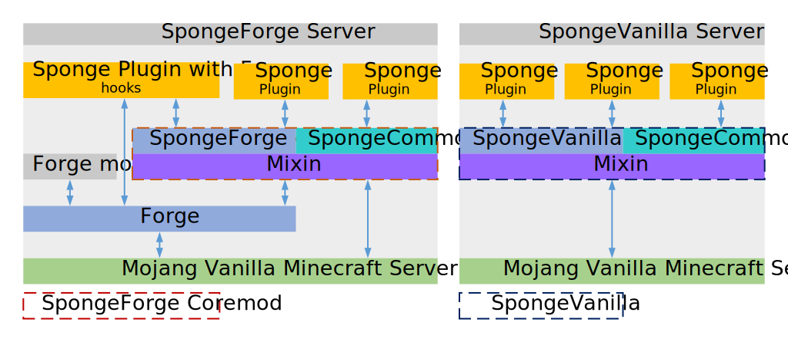

La struttura del Progetto Sponge¶
Il progetto Sponge è costituito da diversi sottoprogetti, ospitati in vari repository su GitHub. Prima di entrare nel dettaglio, ecco una breve panoramica:
| Progetto | Descrizione | Cosa è fatto in questa repository? |
|---|---|---|
| SpongeAPI | La stessa API | Sviluppo dell’API stessa |
| SpongeForge | Un’implementazione della SpongeAPI costruita al di sopra di Forge | Sviluppo delle parti dI SpongeForge che si basano su Forge |
| SpongeVanilla | Un’implementazione di SpongeAPI costruita direttamente al di sopra di Minecraft Vanilla | Sviluppo della controparte Vanilla della repository di SpongeForge |
| SpongeCommon | Il codice condiviso tra SpongeForge e SpongeVanilla | Sviluppo di tutto il codice che è condiviso tra SpongeForge e SpongeVanilla |
| Mixin | Lo strumento utilizzato per iniettare le implementazioni nella struttura del codice sottostante | Sviluppo della nostra soluzione per agganciare Sponge nel server di Minecraft |
| SpongeDocs | La documentazione ufficiale del ProgettoSponge | Espandere, Fixare, e scrivere i SpongeDocs |
| SpongeHome | Il sito web per il ProgettoSponge | Sviluppo del nostro sito |
| Ore | Soluzione hosting per plugin | Sviluppo della soluzione hosting per plugin |
| SpongeAuth | The authentication portal and SSO for our websites | Development of our authentication portal and SSO solution |
SpongeCommon, SpongeForge e SpongeVanilla¶
Il repository di SpongeCommon è la base che contiene tutto il codice che è condiviso tra l’implementazione di SpongeForge e SpongeVanilla. Il repository di SpongeForge e SpongeVanilla contengono tutto il codice che non può essere condiviso tra di loro, poiché Forge richiede alcune cose specifiche che non funzionano su Vanilla e viceversa.
Quando ti riferisci all’implementazione di SpongeForge, in pratica stai parlando di tutto che è contenuto nelle repository di SpongeCommon e SpongeForge. Lo stesso vale per SpongeVanilla e SpongeCommon. Questo è il motivo per cui costruire SpongeForge o SpongeVanilla dal repository senza includere SpongeCommon non funzionerà.
SpongeHome¶
SpongeHome is the Sponge Project’s website. It’s written in Golang, using the go-macaron library. It uses SCSS as its CSS preprocessor.
Minerale¶
Ore is our very own plugin hosting solution. It’s written in Scala, based on the Play Framework and of course open source!
Come tutto è legato insieme¶
L’immagine mostra le varie parti delle implementazioni di Sponge e come interagiscono l’uno con l’altro e le loro dipendenze. Sul lato sinistro si trova una tipica installazione di SpongeForge con alcuni plugin di SpongeAPI, una mod Forge e un ibrido che usa Forge( come una mod) e Sponge (come un plugin) per interagire. Sul lato destro c’è una tipica installazione di SpongeVanilla. Noterai che SpongeVanilla non supporta le mod Forge o gli ibridi, perché esso non presenta la funzionalità di Forge:
